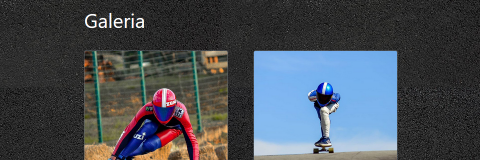
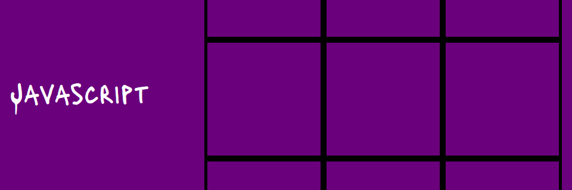
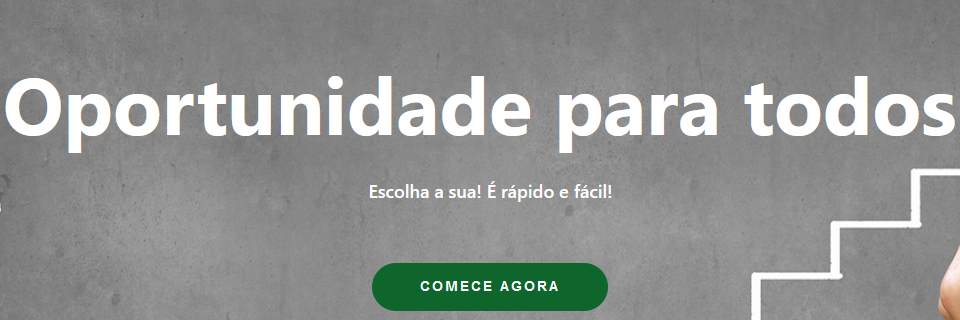

Sobre mim
Estudante de Ciência da Computação pela Unisinos, amante do cinema,
leitor ávido e pro player nas horas vagas.
Atualmente trabalho com visão computacional e machine learning na Pix Force.
Tenho interesse em aprender sobre data science, desenvolvimento mobile e criptografia.
Próximo
Projetos

Comecei a estudar front end em 2019 com HTML e CSS, e com ajuda do bootstrap fiz meu primeiro site,
destinado ao meu pai, que é fotógrafo. Por enquanto é só um showcase, mas com o tempo pretendo
transformá-lo em e-commerce.
Próximo
Ver
Projetos

Depois disso, descobri o javascript e com ele resolvi fazer um jogo simples, mas com muita
capacidade, e assim criei um jogo da velha. É bem básico e manual, pretendo melhorar a lógica e
adicionar multiplayer utilizando socket.io.
Próximo
Ver
Projetos

Trabalhando com React, desenvolvi um site de vagas voltado para desenvolvedores
e empresas de tecnologia. Este foi projeto da cadeira de Desenvolvimento 3,
onde em uma equipe de 4 integrantes, trabalhamos em um ambiente ágil com Scrum.
Próximo
Ver
Contato
São Leopoldo - Rio Grande do Sul
ceschini@protonmail.com
(51) 99246-0044
Fechar